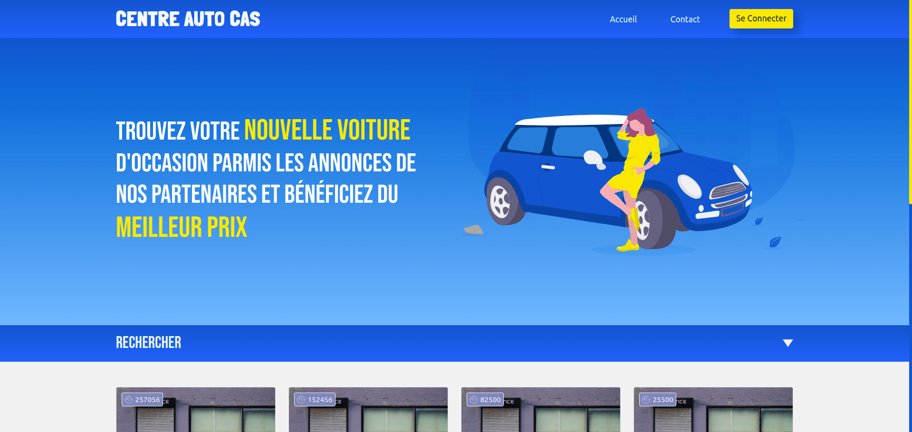

/maxfrecht
/maxfrechtFullstack Developer
Accro à l’auto-formation, curieux et fasciné par les métiers du web, j’ai décidé de suivre une formation d’un an portant sur le développement d’application web et mobile. En parallèle, je suis les cours à distance proposés par Dyma.fr afin de maîtriser les technologies les plus prometteuses de ce domaine.
Télécharger mon CVCe que j'utilise
Css / Sass
Préprocesseur css pour augmenter la productivité. Plus facile à lire et à organiser que le css.
JavaScript / TypeScript
Langues du web. Typescript fournit des correctifs avant code en cours d'exécution.
MySql
MySQL Database Service est un service de base de données relationnelles.
Parcel / Webpack
Des outils pour créer des applications rapides et organisées. Ils me permettent d'utiliser des loaders pour, par exemple, rendre mes applications compatibles avec tous les navigateurs.
PHP (7.4 - 8)
Langage de programmation back-end très largement utilisé.
Figma
Web app to build beautifull designed prototypes
Bootstrap (4.x - 5)
Framework css permettant de construire rapidement le layout de mes applications.
Git
Outils de versionning. Très utile pour le travail en équipe et le partage de mes projets.
Ce que j'apprends
Docker
Docker supprime les tâches de configuration répétitives et banales et est utilisé tout au long du cycle de vie du développement pour un développement d'applications rapide, facile et portable - bureau et cloud.
Angular
Angular est un cadre de conception et de développement d'applications. C'est une plateforme de création efficace et sophistiquée permettant de créer des Single Page Application (SPA).
Symfony
Symfony est un framework basé sur le langage php. Je compte m'en servir principalement pour créer des APIs ainsi que pour créer des sites web qui utilise wordpress ou prestashop comme système de gestion de contenu.
Node.js
Environnement back-end open source. Il permet d'utiliser le système de disques de manière asynchrone et non bloquante.
Flutter
Framework pour la création d'applications mobiles multiplateformes. Il utilise le langage de programmation Dart créé par Google.
Svelte.js
Svelte est une nouvelle approche de la création d'interfaces utilisateur. Alors que les frameworks traditionnels comme React et Vue font la majeure partie de leur travail dans le navigateur, Svelte remplace ce travail par une étape de compilation qui se produit lorsque l'on créé une application.
React.js
Le framework Front-end le plus utilisé aujourd'hui. Il a été créé par Facebook.
Un mot... Apprendre.
Apprendre... J'ai longtemps pensé que mon envie de réaliser une carrière dans le développement web venait simplement de mon attrait pour les nouvelles technologies ainsi que pour l'aspect créatif que représente la programmation informatique et bla et bla et bla. C'est une réponse, certes honnête, mais bien trop vague et partielle que je donnais auparavant à la question : Pourquoi avoir choisi le dev web ? Aujourd'hui, je comprends que c'est simplement le sentiment que produit l'apprentissage de nouveaux concepts et le partage de ces connaissances avec autrui qui animent mes motivations.
Télécharger mon CVMon parcours
Baccalauréat scientifique
2009 - 2012
Lycée Léonard de Vinci, Saint-Michel s/ Orge
J'obtiens mon premier diplôme ! Je n'en suis pas peu fier. A cette époque je souhaite devenir ingénieur du son. Je cherche quelques école et me tourne finalement vers une license en Musicologie. La musique... Une de mes plus grandes passions. En parallèle, je découvre le développement web via des cours OpenClassRoom que je réalise pour le plaisir.
Licence - Musicologie
2012 - 2013
Université Evry Val d'Essonne
Ma première année à l'université ! Je découvre que la musique devra rester une passion à côté de ma vie professionnelle. Les débouchés m'inspirent peu. J'ai beaucoup de mal à m'imaginer continuer mes études dans ce domaine. Je délaisse très vite les cours pour me consacrer à mon job alimentaire, à mes projets musicaux et à ma réflexion sur mes attentes professionnelles.
BTS Communication
2013 - 2015
Lycée Léonard de Vinci, Saint-Michel s/ Orge
J'ai une idée un peu plus précise de ce que je souhaites faire. J'aime être créatif et m'organiser pour réaliser des projets. J'apprends beaucoup sur moi-même pendant deux années d'études au cours desquelles je découvre le vaste monde de la communication et ses différents aspects. J'obtiens mon diplôme en juillet 2015 et décide de revenir à l'université pour y réaliser une licence en Art du spectacle.
Licence - Art du spectacle
2015 - 2016
Université Evry du Val d'Essonne
Me revoilà à l'université. Etrangement, le même scénario que pour la licence musicologie se répète. J'avais envisagé me spécialiser dans le domaine du spectacle pour exercer la communication en son sein. Je redécouvre que la musique, c'est une chose que je fais à côté de ma vie professionnelle. Je délaisse encore assez rapidement les cours pour mon job alimentaire et réfléchir à mes attentes professionnelles.
Chargée de communication
2016 - 2017
Association de lutte contre les préjugés
Mon premier emploi en communication ! Je passe une année à travailler dans le domaine associatif pour une association de lutte contre les préjugés. Une expérience des plus enrichissantes où j'ai l'occasion de participer à la gestion de nombreux événements ainsi qu'à la création de supports de communication divers. Je cherche cependant à élargir mes horizons. Je décide de reprendre mes études pour réaliser une licence professionnelles afin de me spécialiser dans la réalisation web et la communication digitale. Direction Saint-Etienne !
Licence professionnelle ATII
2017 - 2018
IUT de Saint-Etienne / Imprimerie Infab à Saint-Galmier
Je découvre enfin le web ! Je réalise une année d'apprentissage aux côtés de l'imprimerie Infab où j'ai l'occasion de créer entièrement une identité visuelle, un site web institutionnel (wordpress), un site e-commerce (shopify) ! Je participe aussi activement à la gestion des commandes clients (devis, facturation) ainsi qu'à la réalisation des visuels PAO en vue de leur fabrication. A l'IUT, je me familiarise avec HTML / CSS, PHP et mySQL pour le back-end. J'apprends à me servir du CMS Wordpress comme un outil puissant pour réaliser des sites clef en main rapidement.
Responsable TIC
2018 - 2019
Imprimerie Infab à Saint-Galmier
Je continue mon expérience au sein d'Infab. Je participe à différents projets et continue de réaliser la maintenance des sites que j'ai créé pour l'entreprise et lui trouve de nouveaux outils TIC pour son organisation. Après deux ans d'expérience en son sein, la santé économique de celle-ci se dégrade pour des raisons dont je n'ai pas la maîtrise. Un licenciement économique est organisé, je quitte l'équipe à contrecoeur mais avec d'excellent souvenirs à jamais gravés dans ma mémoire.
Direction le métier de développeur web
2019 - 2021
A la maison / Human Booster / Dyma.fr
Je deviens demandeur d'emploi... Je remet alors tout en question et passe par différentes phases d'introspection. Je me rend compte que la licence ATII n'était qu'un avant goût de ce que le web a à m'offrir. Je commence à me former en autodidacte et cherche un contrat en alternance pour faire mes premières armes en tant que développeur web. Ça ne fonctionne pas. Je tombe puis me relève et réussi à me faire accepter en formation de développeur web et web mobile au sein de Human Booster. Ça y est ! La machine est lancé ! Je serai développeur web.
Et maintenant ?
Je recherche un stage du 22 septembre au 22 novembre 2021 (et plus si affinité) afin de valider mon diplôme et enfin démarrer ma carrière dans le métier passionant qu'est le développement web. Mon profil vous intéresse ? Vous aimeriez travailler avec moi ? Me parler d'un projet ?
Contactez-moiMes derniers projets
Centre Auto Cas
- Angular
- Scss
- Symfony
- MySql
- POO

Projets en cours de réalisation. L'objectif est de créer une plate-forme permettant à des professionnels de l'automobile de mettre en ligne et de gérer des annonces de voitures d'occasion.
Composant personnalisation T-shirt
- JavaScript Vanilla
- Html / CSS
Développement d'un composant permettant de personnaliser un t-shirt en temps réel. Au programme : Manipulation du dom, gestion de formulaires, gestion d'erreurs.
Blog
- JavaScript Vanilla
- SCSS
- Webpack
Développement d'un blog en JavaScript Vanilla. Au programme : Manipulation du Dom, gestion des formulaires, gestion d'erreurs, requêtes fetch, AJAX.